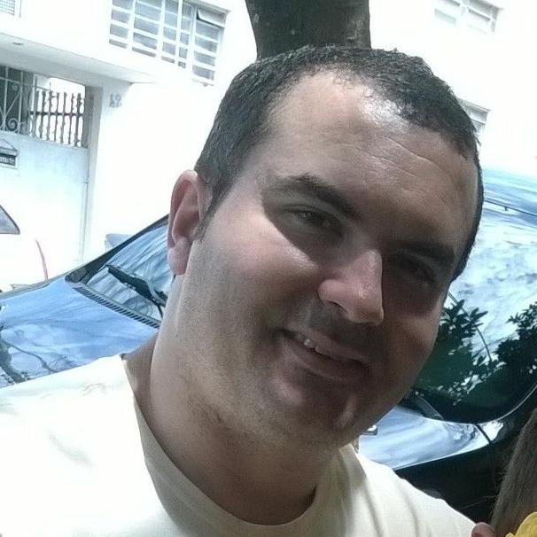
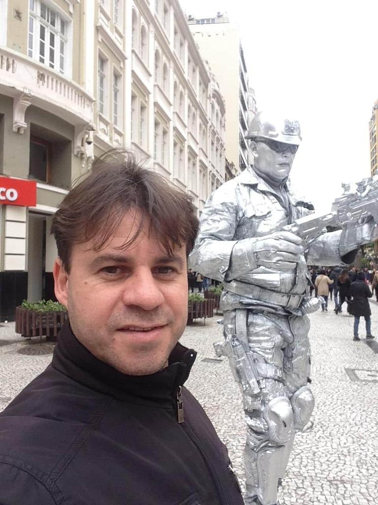

With 19 years of experience in software development, I am passionate about what I do. Always focused on learning and teaching, I am committed to continuous improvement, both individually and within teams, as well as the products I work on.
Academic Education
-
UNESP
Master Degree in Information Science (2022 - 2024)
Focus on 'Information and Technology' with a critical study of methods used to make information available and accessible, particularly using machine learning and interoperabilities models.
-
IGTI
MBA in Machine Learning (December 2019)
Covered planning, modeling and application of advanced Machine Learning techniques to solve organizational problems.
-
UNIVEM
Postgraduate in Web Systems Development (November 2006)
Specialized in developing web systems.
-
UNIVEM
Bachelor's Degree in Computer Science (November 2005)
Graduated in Computer Science from UNIVEM - Márilia/SP.
Certifications
AWS Solutions Architect (SAA-C03)
Design secure, scalable systems on AWS.
Azure AI Engineer (AI-102)
AI apps with Azure Cognitive & ML services.
Azure Developer (AZ-204)
Build and deploy Azure apps and APIs.
TensorFlow Professional Developer
Build Deep Learning Models with TensorFlow
Neo4j Certified Professional
Graph database expertise with Neo4j
Certified NFT Expert™
NFTs, digital assets, and blockchain use.
Certified Docker Foundations
Containerization with Docker basics.
Scrum Master (PSM I)
Practical application of Scrum framework.
AWS Cloud Practitioner (CLF-01)
Core AWS cloud concepts and services.
Azure Fundamentals (AZ-900)
Basic cloud and Azure service knowledge.
Important Projects

Nestlé - Brokers 3.0

Helpchains.com: Blockchain DApp
FHIR Flow: Health Data Interoperability
Sofya AI Health

HCFAMEMA Telemedicine
SOFT: Financial Transactions

Semantic Search: Voice-Activated Search on Elasticsearch
University Professor: Devops & Cloud Computing

University Professor: Advanced Programming Techniques

University Professor: Nodejs
Smart Soccer - AI

Temperature Monitoring with IOT
Agent X: AI Agent for Movie Curation via Social Trends

Representanet
TRIVS

Acessibilidade Marília

HC tá na mão

Engineer Consulting
Testimonials from professionals
-

"Born leader! Even when I led him I saw in a great leader. With assertive and quality, positive attitudes, punctual games to relax tense situations, but without losing focus and, somewhat admirably, he knows how to actively listen. I'm sure I learned from him as much as I taught and way beyond the source code" – Beto Lima: Consultant SAP ABAP/HANA/Fiori-UI5 in Tecno LLAB
-

"A professional example of leadership. Has the ability to make the team always work in the best and most effective way. It has a rare differential to stand out so much technically as in business!" – Reinaldo Porte Peres: Fullstack developer in HCFAMEMA
-

"I worked with Allan for over 3 years and what stands out about him is the spirit investigative to discover new things to improve what is being done. His enthusiasm for discovering new technologies, new methods is contagious because he has a internal motivator that overflows outward inspiring those around you. An exemplary and inspiring professional" – Wagner Jeferson Binoto: Lead Consultant Project Service LATAM - ADP do Brazil